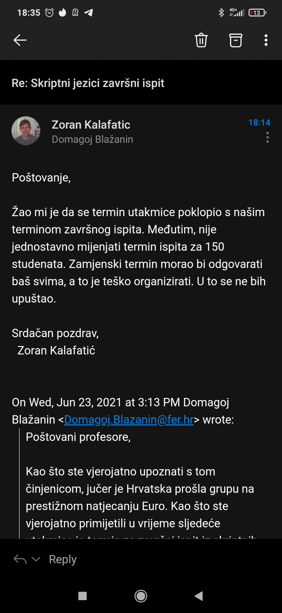

Kolegica s drugog faksa bi htjela doći na predavanja pythona, jesu li predavanja na faksu i može li netko podijeliti točne datume kada su i ima li snimki predavanja negdje?
madukali
online predavanja, snimke dostupne na teamsu, prvo radimo bash pa perl i tek onda python postoji i ovo: https://fer.studosi.net/d/2788-ilpc-o-tecaju
Ima li tko možda skinuto 5. predavanje?
Ako imam prag na labosima (15 bodova) da li moram uopće izlaziti na 3. Lab?
Lumpy pitao profesora, ne treba. Bitno je da je prag zadovoljen.
Jel ima netko možda negdje skupljena pitanja ne mogu nigdje naći?
Zulul ovo je sve što ima: https://github.com/studosi-fer/SKRJEZ/tree/master/ispiti
Bazul Jesi poslao?
VolimStopala🇻🇦🇭🇷 Ma da, nista od toga
https://drive.google.com/drive/folders/1_uXizmiEDog3lW0SQxB67SYN08t9eaAF?usp=sharing
Ovo sta sam ja naso za ucit, vecina je slicna ovog iz ovog zipa
Jel postoje nadoknade labosa iz ovog?